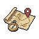

Chosen island
Realm · grade · shared duration
Authored sheets-v2 HTML using the sheet CSS. Compact figures illustrate header structure only; exact viewport geometry remains unrun in compactHeader.browser.assertions.ts. These are inert structural references, not rendered React or verified native parity. No server, script, wallet, or network call. Ellipses represent snapshot values.
Small header icons are existing kit art placeholders; the host supplies the living header. The host also owns the visible world, scrim, Back, focus and insets. No game balance values are invented.

Route preview checked
Realm · grade · shared duration
Trips and tier from the snapshot
Required supply rows
Departure unavailable
Install a vehicle at the Berth before sailing.
Paid route
A permit is reviewed before departure
Network cost only in the Seal
Advanced voyage
Eligible tier and trips left
Fresh preview required
Realm and grade groups
SELECT
Explains tier or permit
Opens the trip
Returns before at-sea trips
COLLECT only with server-returned rewards
Shared duration label
Due back · checking
Verified records
A record of places reached.
Count from verified source
RECORD; nothing to buy
No resource stack
Trips remaining
Not selectable for a new departure
Choose a wallet vehicle
Restore or upgrade
Result and consumed vehicle from the snapshot
Network cost only in the Seal
Wallet input
Wallet-owned and available
Review before confirmation
Original operation recovery
Your collection is being checked.
No receipt, no celebration or rewards.
Authoritative receipt required
Quantity from the verified receipt
A long status from the current authoritative snapshot
Controlled snapshot row · quantities and durations await server values.
Controlled snapshot row · quantities and durations await server values.
Controlled snapshot row · quantities and durations await server values.
Controlled snapshot row · quantities and durations await server values.
Controlled snapshot row · quantities and durations await server values.
Controlled snapshot row · quantities and durations await server values.
Controlled snapshot row · quantities and durations await server values.
Controlled snapshot row · quantities and durations await server values.
A long status from the current authoritative snapshot
Controlled snapshot row · quantities and durations await server values.
Controlled snapshot row · quantities and durations await server values.
Controlled snapshot row · quantities and durations await server values.
Controlled snapshot row · quantities and durations await server values.
Controlled snapshot row · quantities and durations await server values.
Controlled snapshot row · quantities and durations await server values.
Controlled snapshot row · quantities and durations await server values.
Controlled snapshot row · quantities and durations await server values.
A long status from the current authoritative snapshot
Controlled snapshot row · quantities and durations await server values.
Controlled snapshot row · quantities and durations await server values.
Controlled snapshot row · quantities and durations await server values.
Controlled snapshot row · quantities and durations await server values.
Controlled snapshot row · quantities and durations await server values.
Controlled snapshot row · quantities and durations await server values.
Controlled snapshot row · quantities and durations await server values.
Controlled snapshot row · quantities and durations await server values.